Oscuro's Oblivion Overhaul Remastered FULL
Release Tracker
Overview — what OOORF bundles
Oscuro's Oblivion Overhaul Remastered FULL (OOORF) is the Oblivion Remastered (UE5) re-release of the long-running Oscuro's Oblivion Overhaul (OOO) gameplay mod, with Shivering Isles content extended to match.
Note: OOORF (this site) is the FULL edition. The acronym OOORS refers to the separate Slim edition.
What's new in alpha91
- 14 new cloned and retextured armor sets: ArcticFur, Aureus, BloodLeather, BlueGlass, Drakefired, Eboron, ElvenEldar, ElvenNight, ElvenSky, GoldenBronze, GrayFox, ShadowMail, WornFur, and WornLeather all ship for the first time with dedicated UE5 visuals (84 new pak files in total — one
<Set>Items+<Set>Materialspair per set). Each set rebrands a long-standing OOO armor family from its placeholder vanilla appearance to its own dedicated look. The new New Items page lists every set with full inventory icons, EDIDs, FormIDs, and UE5 asset paths. - BGlass and RGlass renamed: the alpha90
BGlassItems/BGlassMaterialsandRGlassItems/RGlassMaterialspaks are removed and re-released as BlueGlass and Drakefired respectively. Same FormIDs, same visuals — the renames clarify the in-game identity. The six BlueGlass display names also change from "Ornate Obsidian …" to "Blue Glass …" in the MagicLoader ARMO JSON. - ~307 SyncMap rebindings: all of the new and renamed sets have their existing OOO FormIDs re-pointed at the new UE5 asset paths. Largest groups: GoldenBronze (42), ElvenSky (35), BlueGlass (34), Eboron (34), Drakefired (33), ElvenEldar (33), ElvenNight (32), BloodLeather (24), GrayFox (10); ArcticFur, Aureus, ShadowMail, WornFur, and WornLeather each contribute 6.
- 7 dungeon map paks rebuilt (14 zones): further tuning of ghost-object suppression, position overrides, and TES4-twin disablement in
L_BloodClotCave_Map,L_BrokenToothCaveXX_Map,L_DeepCoverCav_Map,L_GraveGroundCaveXX_Map,L_LipsTarn03_Map,L_RosulasXX_Map, andL_ThunderingSte_Map. Net per-cell changes: +254 disabled REFRs (2127 → 2381 across 27 cells), +17 position overrides, and +92 Begone entries. New cells covered for the first time: LipsandTarn03OOO, Varastal, BrokenToothCave, and the GraveGroundCave_Li layer. - New exterior fix:
GraveGroundExterior_P.{pak,ucas,utoc}ships an exterior foliage fix for the Grave Ground Cave area — the first non-dungeon map pak in the OOORF bundle. - ESP additions: six new ARMO records — the
LairVileCrimsonScarRaimentseries at levels 01, 05, 10, 15, 20, 25 — rebalance Crimson Scar Raiment from Vile Lair to match de-leveled weapon changes made in previous releases.
See the alpha91 changelog for the full file-level diff, or the GitHub release page to download.
Previously: what was new in alpha90
Curated highlights from the prior release — preserved here so the per-release stories accumulate into the eventual beta and GA release notes. See the alpha90 changelog for the full file-level diff.
- New dungeon map: Lipsand Tarn 03 (
L_LipsTarn03_Map.{pak,ucas,utoc}) joined the bundled map set. - First three custom item sets debut: Obsidian (bronze trim, black body, by SquigM), BGlass (gold trim, blue body — also SquigM's
GoldBlueGlassArmourWeapons, first OOORF conversion), and RGlass (the Drakefired set — a mashup of ProhagonCreations Blackened Glass with the glass parts recolored dark red). Six armor pieces each (Boots, Cuirass, Gauntlets, Greaves, Helmet, Shield). The Obsidian set also introduced a full 9-weapon line for the first time (BattleAxe, Bow, Claymore, Dagger, Longsword, Mace, Shortsword, WarAxe, WarHammer), distributed via a new loot leveled list (LL0LootWeapon7Obsidian100) and folded into two existing NPC bow lists for the Obsidian Bow. In alpha91 the BGlass and RGlass paks were renamed toBlueGlassandDrakefired; the underlying items and visuals carry over. - All 16 dungeon map paks rebuilt — ghost-object suppression moved into the paks. Earlier OOORF builds relied on the
BegoneUE4SS Lua mod to hide UE5-only kit props (extra doors, ambient fires, debris, dynamic FX) at runtime every cell load. Alpha90 migrated that suppression into the map paks themselves: every bundled dungeon —L_Arondar_Map,L_Baras_Map,L_BloodClotCave_Map,L_BrokenToothCaveXX_Map,L_Cehan_Map,L_DeepCoverCav_Map,L_Dostares_Map,L_DrownedHopesCa_Map,L_GloomWayCaveXX_Map,L_GraveGroundCaveXX_Map,L_NarindXXX_Map,L_RedGillCave_Map,L_RosulasXX_Map,L_ThunderingSte_Map,L_VarastalXX_Map,L_Yele_Map— shipped with a refreshed.ucas/.utocwhere the suppression is baked in. Result: less Lua work at every cell load, fewer runtime races between Begone and the engine, and a more stable first-entry experience. - UE4SS mod updates aligned with the pak migration: the
Begoneconfig JSON shrank from ~115 KB → ~60 KB (entries the paks now handle directly removed), whileBegone/Scripts/main.luagrew from ~25 KB → ~37 KB to support the new pak-aware suppression flow.OOO_REFRFix/Scripts/main.luawas also refreshed. - Data refresh: main ESP, SyncMap INI (incl. Deluxe variant), CELLMAP and WEAP MagicLoader JSONs.
What is included in an OOORF release
An OOORF release is a directory tree the user merges into their Oblivion Remastered\ install. The latest build (alpha91 · 199 files · 215.9 MiB) includes:
Game-data overlay (OblivionRemastered/Content/Dev/ObvData/Data/)
| Path | Purpose |
|---|---|
Oscuro's_Oblivion_Overhaul.esp |
The main OOO TES4 plugin — leveled lists, NPCs, creatures, items, quests, factions, dialog, etc. |
OptionalPatches/OOO_DeluxeEdition.esp |
Optional content for the Deluxe edition of the game. |
OptionalPatches/OOO_OOMC_Compatibility_Patch.esp |
Compatibility for OOMC (Opulent Outfits: Mages of Cyrodiil). |
OptionalPatches/OOO_UORP.esp |
Compatibility for the Unofficial Oblivion Remaster Patch. |
OptionalPatches/OOO_UnlimitedRingsReduxPatch.esp |
Compatibility for the Unlimited Rings Redux mod. |
OptionalPatches/SyncMap - DeluxeEdition/Oscuro's_Oblivion_Overhaul.ini |
Alternate SyncMap override for Deluxe-edition users. This greatly improves the unique look of several unique item sets by using new artwork added in the Deluxe Edition. |
MagicLoader/Oscuro's_Oblivion_Overhaul_*.json |
Per-record-type JSON exports (ACTI, ALCH, AMMO, ARMO, BOOK, CELL, CELLMAP, CLAS, CLOT, CONT, CREA, DIAL, DOOR, ENCH, FACT, INGR, KEY, MISC, NPC_, QUST, SCPT, SGST, SLGM, SPELL, WEAP). Consumed by MagicLoader at game launch to provide proper localization for in-game content. Required. |
SyncMap/Oscuro's_Oblivion_Overhaul.ini |
TES4 FormID → UE5 SoftObjectPath mappings consumed by TesSyncMapInjector at load time. This is used to ensure proper asset references in the UE5 layer of Oblivion Remastered. Required. |
New Dungeons and Items - custom UE5 pak mods to add new dungeons, armor and weapons (OblivionRemastered/Content/Paks/~mods/)
21 new interior maps. Almost all of these have working zone lighting, water, and working navmesh pathfinding. A few are generic empty maps for small locations where we could not easily build full UE5 map support. (.pak + .ucas + .utoc):
L_Arondar_Map, L_Baras_Map, L_BloodClotCave_Map, L_BrokenToothCaveXX_Map, L_Cehan_Map, L_DeepCoverCav_Map, L_Dostares_Map, L_DrownedHopesCa_Map, L_GloomWayCaveXX_Map, L_GraveGroundCaveXX_Map, L_LipsTarn03_Map, L_NarindXXX_Map, L_OOOR1waterCave_Map, L_OOOR2waterCave02_Map, L_OOORCastleInterior_Map, L_OscuroWaterCellCHMGWell0_Map, L_RedGillCave_Map, L_RosulasXX_Map, L_ThunderingSte_Map, L_VarastalXX_Map, L_Yele_Map.
Plus one exterior fix pak added in alpha91: GraveGroundExterior_P.{pak,ucas,utoc} — foliage fixes for the Grave Ground Cave exterior cell.
Per-dungeon validation status
Each new dungeon goes through in-game validation passes (NPC pathfinding, water surface/swim behavior, REFR placement, ghost-object suppression, surface-flicker) before we mark it shippable. The four generic "blank-room" maps (L_OOOR1waterCave_Map, L_OOOR2waterCave02_Map, L_OOORCastleInterior_Map, L_OscuroWaterCellCHMGWell0_Map) are utility shells and are not validated per-dungeon. Current state: 15 of 17 dungeons are now fully validated; only the two water caves below — both still missing navmesh / position / flicker passes — are tagged not-yet-validated.
| Dungeon | Status |
|---|---|
| Arondar | Validated |
| Barastas | Validated |
| Blood Clot Cave | Validated |
| Broken Tooth Cave | Validated |
| Cehani | Validated |
| Deep Cover Cave | Validated |
| Dostares | Validated |
| Drowned Hopes Cave | Validated |
| Gloom Way Cave | Not yet validated (ghost suppression done; navmesh / position / flicker passes pending) |
| Grave Ground Cave | Validated |
| Lipsand Tarn 03 | Validated |
| Narind | Validated |
| Red Gill Cave | Not yet validated (ghost suppression done; navmesh / position / flicker passes pending) |
| Rosulas | Validated |
| Thundering Steps Cave | Validated |
| Varastal | Validated |
| Yeleri | Validated |
"Validated" means the dungeon has been walked end-to-end in-game and all applicable phases pass (NPC pathfinding, REFR positions, ghost-object suppression, surface-flicker, and water surface/swim behavior where applicable). The two remaining not-yet-validated dungeons have curated ghost-object suppression but are still missing full-zone passes for the other phases — they are playable, but expect rough edges (stray ghost objects in untouched layers, mispositioned REFRs, or pathfinding gaps) until a full retest is logged.
Custom cloned and retextured item sets
OOO has shipped many recolored Glass / Mithril / Elven / Leather / Fur armor families for a long time — their TES4 records, stats, and leveled-list placement all live in the main ESP. What was missing in OOORF builds before alpha90 was their dedicated UE5 appearance: the SyncMap (the authoritative FormID → UE5 asset binding in Oblivion Remastered) used to point all of these items at the vanilla UE5 assets they were originally cloned from, so they rendered as ordinary Glass / Mithril / Elven / Leather / Fur in-game despite the rebalanced stats. Alpha90 introduced this rebinding for Obsidian + BGlass + RGlass; alpha91 expands it to 14 more sets, and renames the two armor-only Glass-clones from alpha90 to clearer player-facing names (BGlass → BlueGlass, RGlass → Drakefired).
Each set ships as a matching <Set>Items + <Set>Materials pak pair, produced by the OblivionRemastered_ItemClone pipeline. See the New Items page → for the full per-set tables (every item's inventory icon, EDID, FormID, and UE5 form path). Or jump straight to a set from the gallery below — click any render to land on that set's section.
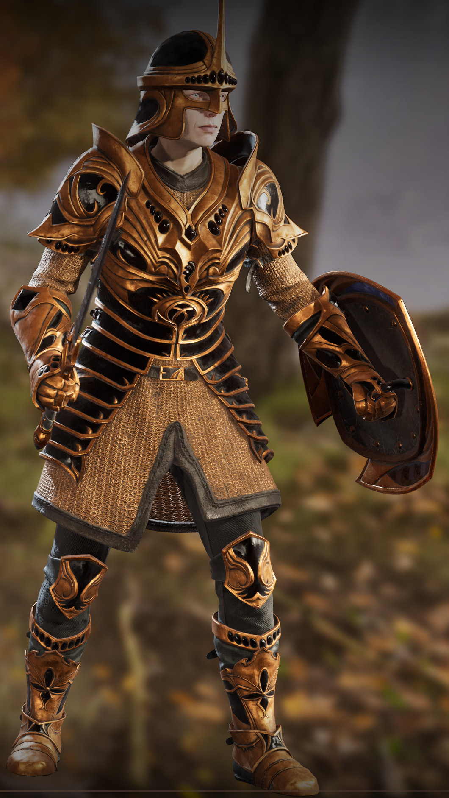
Obsidian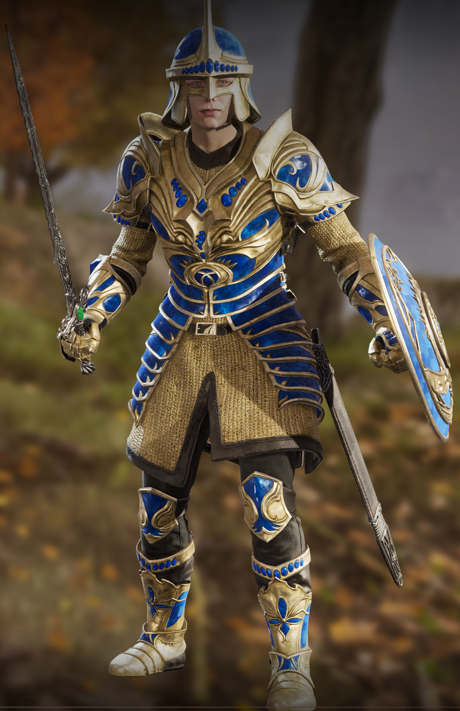
BlueGlass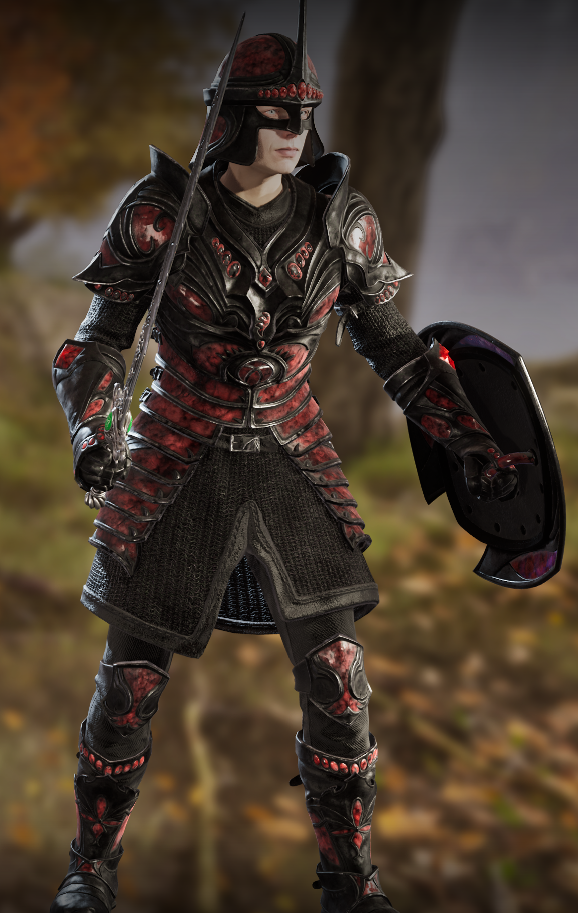
Drakefired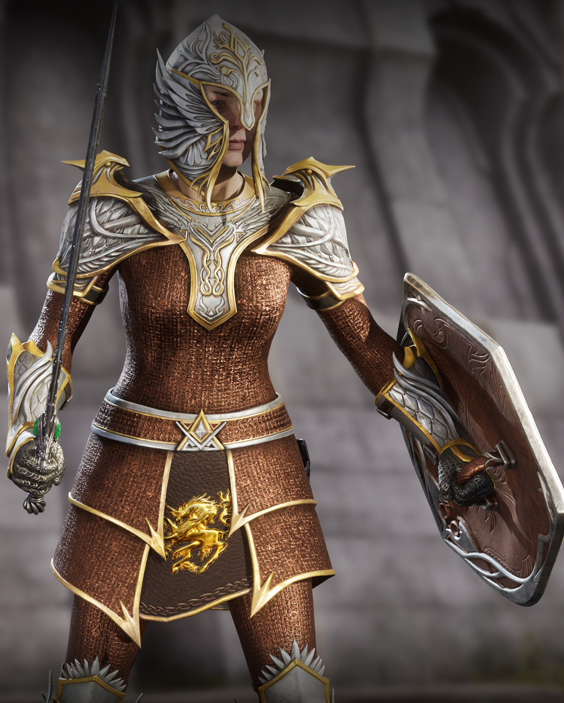
Aureus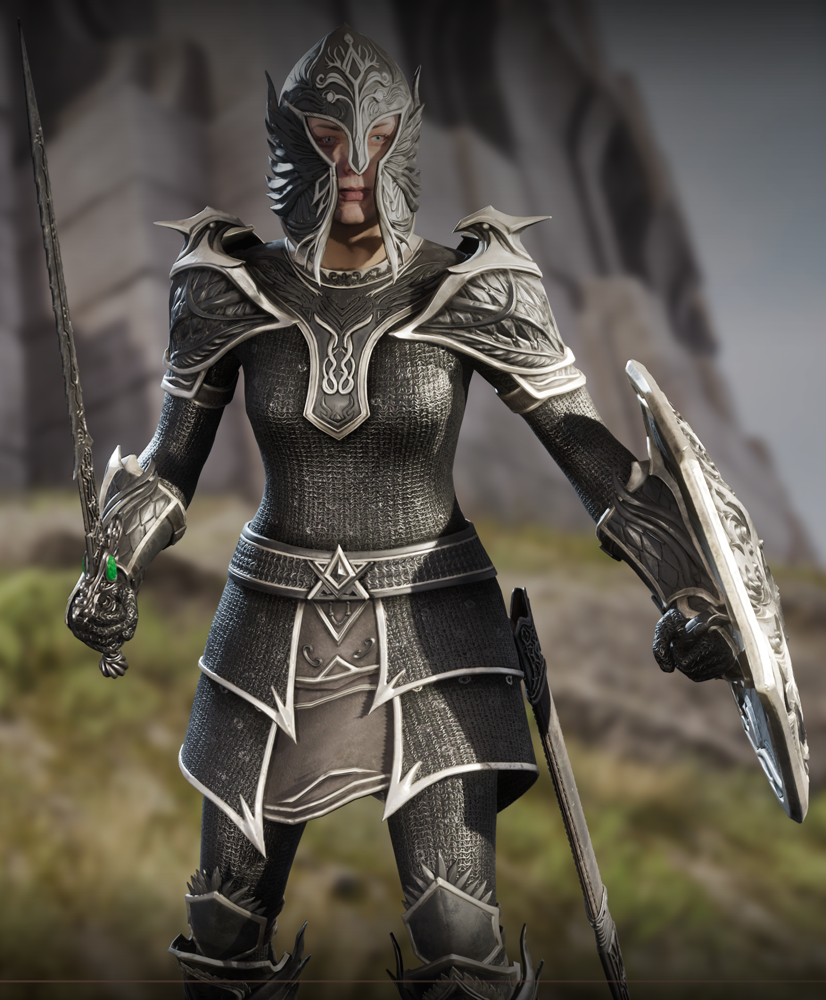
Eboron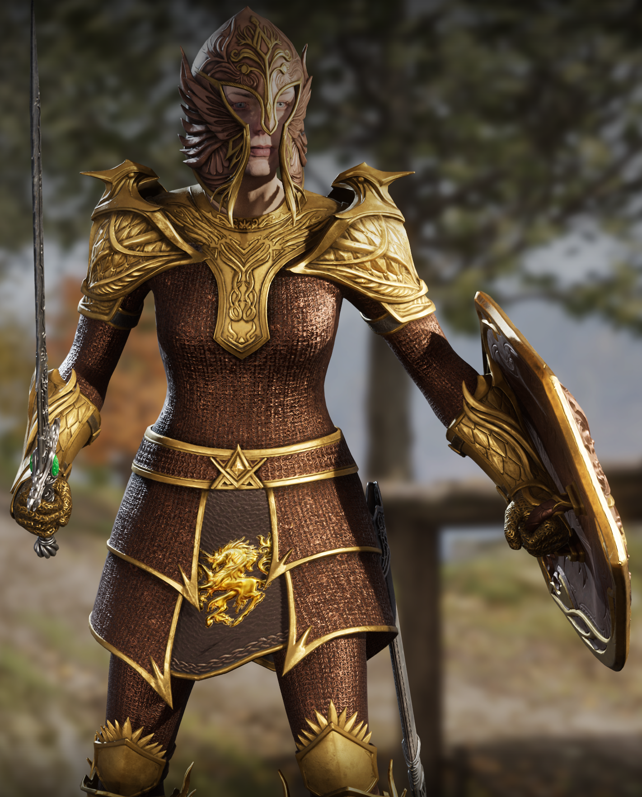
GoldenBronze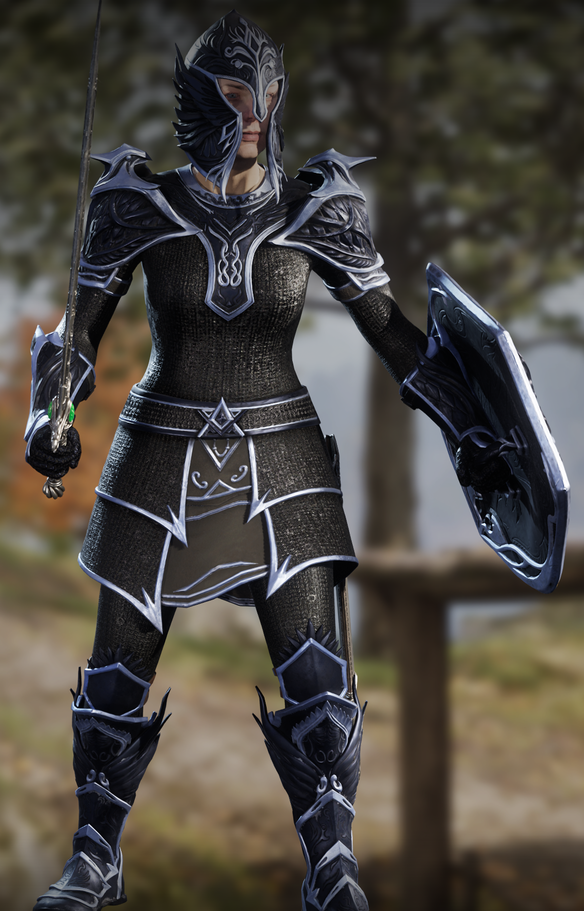
ShadowMail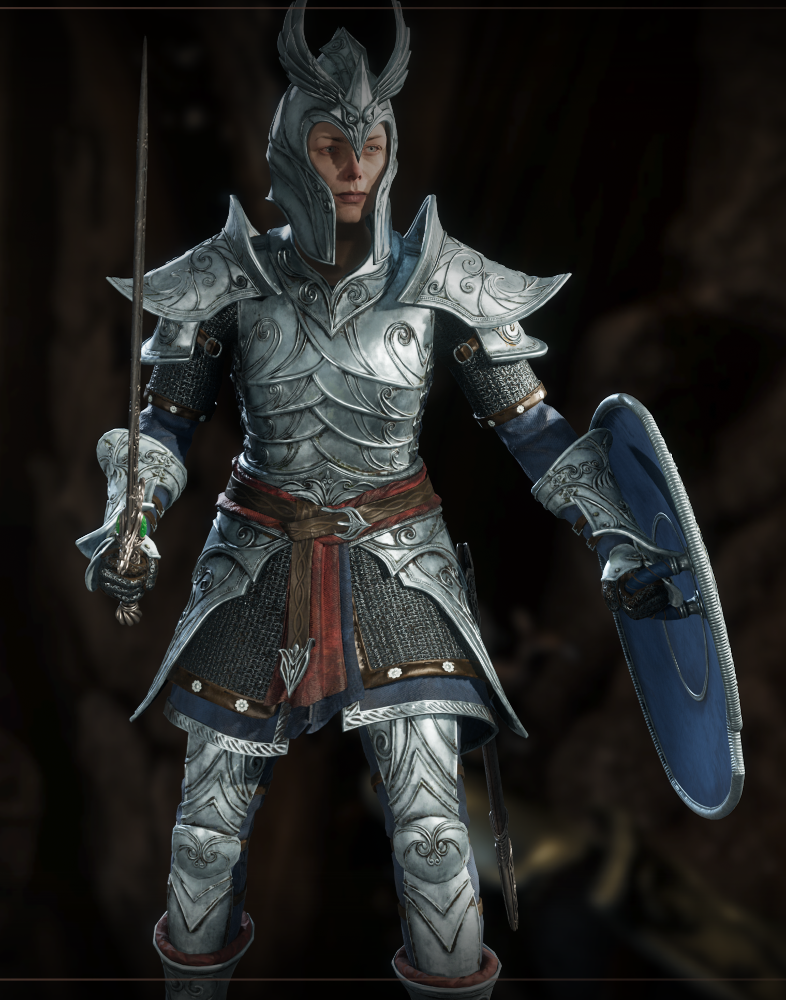
ElvenSky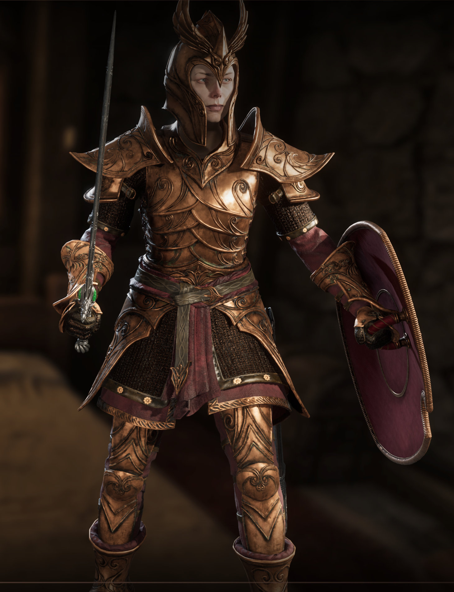
ElvenEldar ElvenNight
ElvenNight
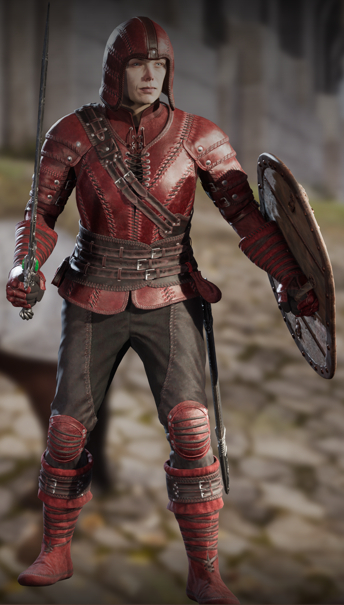
BloodLeather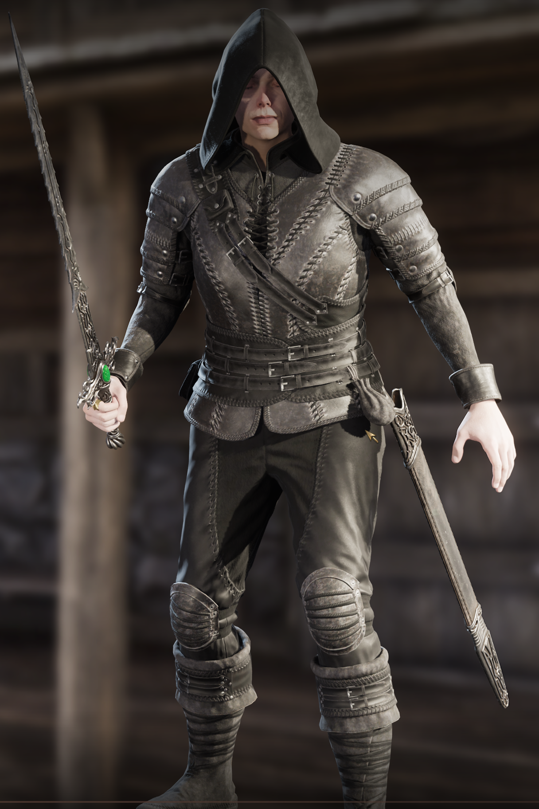
GrayFox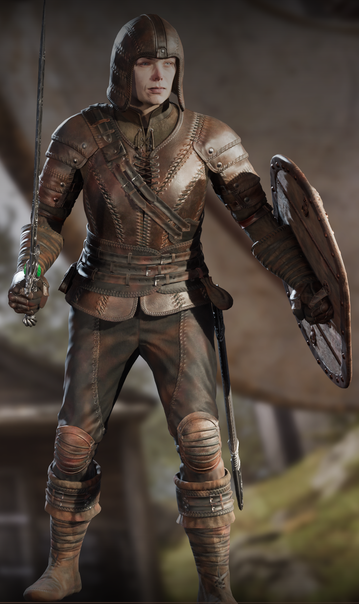
WornLeather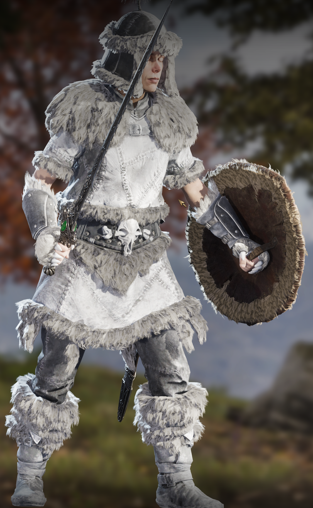
ArcticFur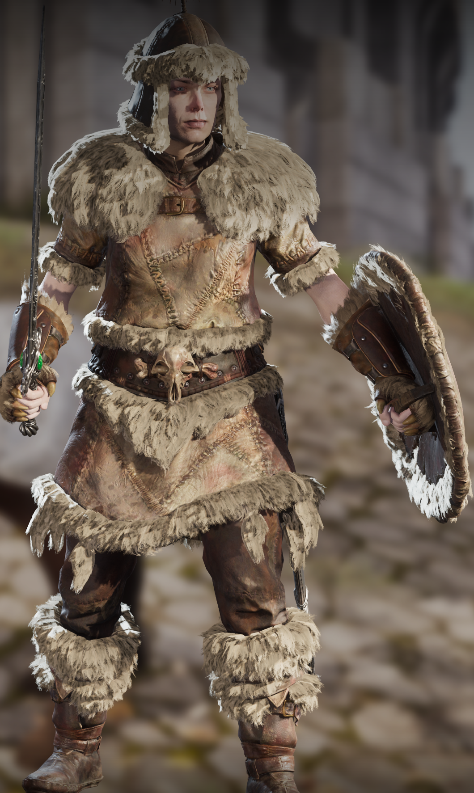
WornFurSets are grouped above by base material: Glass (Obsidian, BlueGlass, Drakefired), Mithril (Aureus, Eboron, GoldenBronze, ShadowMail), Elven (ElvenSky, ElvenEldar, ElvenNight), Leather (BloodLeather, GrayFox, WornLeather), Fur (ArcticFur, WornFur). Obsidian is the only set that also ships a weapon line (9 pieces); the other 14 are armor-only six-piece sets.
Visual sources. SquigM retextures donate the visuals for Obsidian (BronzeBlackGlassArmourWeapons) and BlueGlass (GoldBlueGlassArmourWeapons). The Drakefired set is built from ProhagonCreations Blackened Glass with the glass parts recolored dark red. The remaining 12 sets are in-house recolors built on the relevant Glass / Mithril / Elven / Leather / Fur donor materials through the OblivionRemastered_ItemClone pipeline.
Stats note: all sets have stats significantly rebalanced compared to their vanilla base material — they are distinct items, not just retextures. Slot coverage and leveled-list placement are auditable in the main ESP with TES4Edit / xEdit if you want the specifics.
UE4SS Lua mods (OblivionRemastered/Binaries/Win64/ue4ss/Mods/)
Required for normal play
| Mod | What it does |
|---|---|
RAX/ |
Allows loading of new custom maps. Created by Antrix to allow OOO to load custom UE5 maps. Native DLL helper (dlls/main.dll) plus Lua glue. Required. |
Alpha-testing utilities (optional)
Also bundled in the same folder, but not required for normal play. These exist to support the OOORF alpha-testing workflow — leave them enabled if you are testing or migrating an older save; disable them otherwise.
| Mod | What it does |
|---|---|
Begone/ |
Test recording, debugging, and ad-hoc UE5-mesh suppression. Originally Begone suppressed UE5 ghost objects (extra doors, fires, debris, dynamic FX) at runtime via per-cell rules in Config/OscurosOblivionOverhaul.json; as of alpha90 that suppression is baked into the map paks themselves, so Begone is no longer required for normal play. Two ongoing uses: (1) capturing per-cell object inventories during dungeon walkthroughs and verifying or extending suppression coverage when new map paks are being built; and (2) a runtime escape hatch — if a problem UE5 mesh slips through into a shipped pak, Begone can still suppress it via config rules until a pak rebuild lands. |
OOO_REFRFix/ |
Save-file migration helper. Fixes spawn / placement deltas for OOO references stored in your save file (Scripts/spawn_deltas.lua). Only required if you have existing saves with older alpha-release OOO references; not needed for new saves or if you never used prior alpha releases. |
Brief recap of the alpha releases so far
| Number range | What was happening |
|---|---|
alpha00-premerge |
Pre-merge snapshot — multiple legacy ESPs side-by-side (137, 137ESM, _ESP, _merged) before consolidation. |
alpha01–alpha14 |
Single consolidated ESP + the first MagicLoader JSON (SPELL only at first), gradually adding more record-type JSONs. |
alpha15–alpha40 |
The full record-type JSON family lands; OptionalPatches start appearing. |
alpha32nex |
Parallel Nexus-prep variant of alpha32 (lives on the variants/alpha32nex branch). |
alpha41–alpha70 |
Mostly tuning passes — small file counts changing each build, ESP iteration. |
alpha71–alpha90 |
UE4SS mods (RAX, Begone, OOO_REFRFix) and IoStore content (L_*_Map, Obsidian set) get layered in. |
How to compare two releases
git diff alpha75..alpha91 -- manifests/ # see exactly which file SHA-256s changed
cat docs/per-release/alpha91.md # human-readable added/removed/changed list
git log --oneline alpha75..alpha91 # the commit subjects (= release names) between